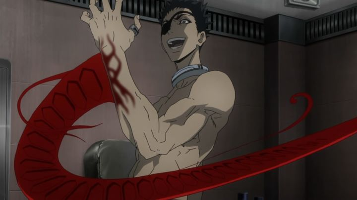

One of the most infamously violent anime shows of the last decade. AND it got an American television broadcast on Toonami for its popularity. "Deadman Wonderland" probably isn't as good as the hype would say, and yet even better at the same time. But not if you're squeamish. Poor Ganta is having a bad day. His class was about to go on a field trip when all his classmates are slaughtered, guts and blood on the walls and ceiling, by a mysterious floating man in red. Being the only survivor, Ganta is framed for the crime, and is put on death row. Well, a different kind of death row. Welcome to Deadman Wonderland, a carnival/amusement-park attraction where the public watches inmates compete for their lives for sport, often being killed in horrific ways in the process (not being aware it's all real, of course). Throw in that Ganta, as well as a handful of other inmates, have a strange ability to transform their blood into weapons, and you have one heck of an entertaining show. And the show is nothing if not entertaining. Blood and violence is almost in same supply as humor, often out of place and yet fully part of what makes the show what it is. Even a bit of fanservice peaks its head in. It also has more twists than you can imagine, making it impossible to guess what happens two episodes later. That leads into problems, like character arcs getting forgotten, unexplained, or being left VERY open ended by the end. In fact, the very last line is like a big tease, but no second season is likely to occur (the animation studio Manglobe would go bankrupt a few years after the show was made). Oh yes, the show is censored, even on Bluray. But only in a handful of scenes, some of which were so gory you'd be twisted to want to see it. And there's still more than enough gore to make you wince. Animation is surprisingly good at some points (by which I mean a little sketchy but with a lot of movement, which may or may not be to your tastes). Overall, both stylistically and production wise, this is one of the solidly better-looking anime shows of its year.  The English dub actors have great fun, especially with the crazy characters (which is almost everyone), which makes it worth watching in English. The soundtrack is rock-and-roll, complete with a darn good English opening.Basically, if you want Battle Royale mixed with Afro Samurai with a dash of crazy, look no further than "Deadman Wonderland". Also, you're insane.
- "Ani" More reviews can be found at : https://2danicritic.github.io/ Previous review: review_Date_A_Live Next review: review_Death_Does_Not_Exist